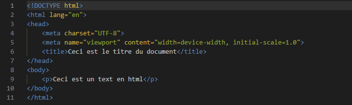
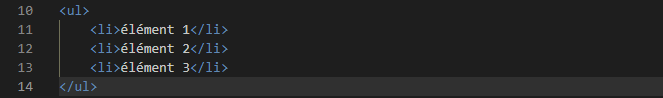
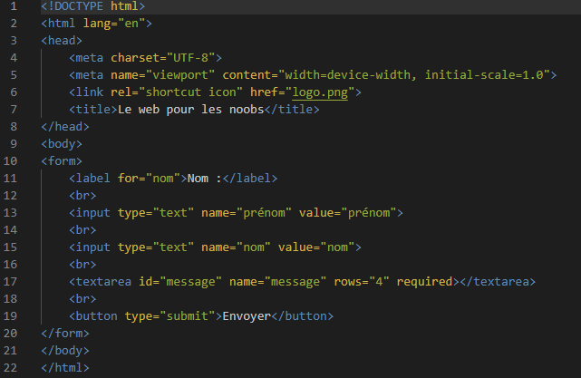

Le HTML
HTML (HyperText Markup Language) est le langage fondamental qui constitue le squelette structurel de toute page web. En tant que langage de balisage, HTML permet de définir la structure logique et hiérarchique des éléments d'une page, tels que les titres, les paragraphes, les images et les liens. Chaque balise HTML englobe le contenu qu'elle représente, fournissant ainsi une organisation claire et compréhensible pour les navigateurs web. En combinant des balises avec des attributs, HTML offre une base solide pour la création de contenus web accessibles, sémantiques et interprétables aussi bien par les utilisateurs que par les moteurs de recherche.
Les balises
Les balises sont des éléments fondamentaux d'HTML et sont utilisées pour définir et structurer le contenu de la page web.
Une balise commence par < et se termine par >. Par exemple, <p> est la balise pour un paragraphe.
Les éléments
Un élément HTML est constitué d'une balise ouverte, du contenu et d'une balise fermée. Par exemple :
<p> Ceci est un paragraphe. </p>
Les attributs
Les balises peuvent avoir des attributs qui fournissent des informations supplémentaires sur l'élément. Les attributs sont généralement spécifiés dans la balise ouverte. Par exemple :
<a href= https://exemple.fr >Lien vers exemple</a>
structure de base
Une page HTML typique commence par la balise <html> et se divise en deux sections principales : <head> (contenant des métadonnées et des liens vers des fichiers externes) et <body> (contenant le contenu réel de la page).
cliquez ici pour essayer
Le commentaire
Le commentaire est inséré lors de l'écriture d'une page web pour donner des indications sur le code. Il est complètement ignoré lors de l'exécution du code. Il s'écrit <!-- Contenu du commentaire -->
Le texte
Nous allons voir ici ce que l'on peut faire sur un texte en html
<p>
La balise <p> est la balise permettant de faire un paragraphe. exemple:
<p>Ceci est un paragraphe</p>
<h1> à <h6>
Les titres sont définis avec les balises <h1> à <h6>, <h1> étant le plus grand.
cliquez ici pour essayer<strong>
La balise <strong> permet de mettre du texte en gras. exemple:
<strong>Ce texte est en gras</strong>
Une autre possiblité est de mettre que une partie d'un paragraphe en gras. exemple:
<p>Ces frites sont vraiment<strong>grasses</strong>comparé à celle de papa.</p>
cliquez ici pour essayer<em>
La balise <em> permet de la même manière que <strong> de mettre du text en italique
cliquez ici pour essayercaractères spéciaux
Pour insérer des caractères spéciaux on écrit & suivit d'un nom ou d'un numéro de référence, puis on termine par ";". exemple:
<p>Le prix est de 10 &euro ;</p> Retirez l'espace entre le o et le point virgule
cliquez ici pour essayerSaut de ligne
Un saut de ligne s'effectue avec la balise <br> entre deux éléments. La particularité de cette balise et qu'elle de se ferme pas. exemple:
<p>Texte 1</p>
<br>
<p>Texte 2</p>
cliquez ici pour essayerLes images
Nous allons voir comment insérer une image sur une page web
<img>
Pour insérer une image on utilise la balise <img> mais il faut ajouter dans la balise ouvrante un attribu src= suivit du lien entre guillemets. Cette balise ne se ferme pas aussi. exemple:
<img src="imagedechat.jpg">
cliquez ici pour essayeralt
L'attribu alt ce place après le src au cas ou l'image ne chargerait pas pour x ou y raison. exemple:
<img src="imagedechat.jpg" alt="imagedechat">
cliquez ici pour essayerLes liens
Un lien nous emmène sur une autre page web que se soit sur internet ou sur un autre fichier html du même site
<a>
La balise <a> suivi de l'attribu href=suivi lui même du lien nous permet de crée un lien. exemple:
<a href="https://youtube.fr">Cliquer ici pour aller sur YouTube</a>
cliquez ici pour essayerLes liens image
On peut aussi créer une image qui lorsque l'on clique dessus, nous emmène à la page web désiré. exemple:
<a href="https://youtube.fr"><img src="imagedeyoutube.jpg" alt="image de youtube"></a>
cliquez ici pour essayerLes listes
Nous allons voir comment insérer une liste dans une page web
<ul> et <li>
Une liste s'écrit de la manière suivante avec <ul> définisant la liste et <li> définisant les éléments. exemple
cliquez ici pour essayer
Les formulaires
Un formulaire HTML permet aux utilisateurs de saisir des données qui seront envoyées au serveur pour être traitées.
<form>
La balise <form> définit le début et la fin du formulaire. L'attribut action spécifie l'URL vers laquelle les données du formulaire seront envoyées, et l'attribut method spécifie la méthode HTTP à utiliser (généralement "post" ou "get").
<label>
La balise <label> est utilisée pour associer une étiquette à un champ de formulaire. L'attribut for de la balise <label> doit correspondre à la valeur de l'attribut id du champ de formulaire associé.
<input>
La balise <input> est utilisée pour créer différents types de champs de formulaire, tels que des champs de texte, des cases à cocher, des boutons radio, etc. L'attribut type spécifie le type de champ, et l'attribut name est utilisé pour identifier le champ lors de l'envoi du formulaire.
<textarea>
La balise <textarea> est utilisée pour créer une zone de texte multiligne. L'attribut rows spécifie le nombre de lignes visibles dans la zone de texte.
<button>
La balise <button> crée un bouton de soumission du formulaire. Lorsqu'il est cliqué, le formulaire sera envoyé vers l'URL spécifié dans l'attribut action.
required
l'arttribu required rend le champ selectioné obligatoire.
cliquez ici pour essayer